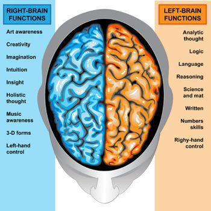
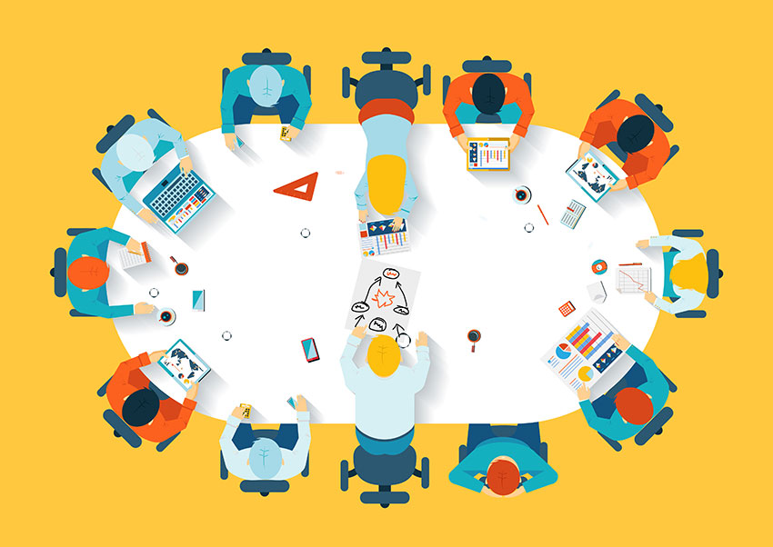

프로젝트 기획
기획안 작업
1. 기획은 웹 콘텐츠의 설계도
1)목표를 설정
2)목표 달성을 위한 필수단계
2. 기획자의 뚜렷한 주관과 독창성이 담긴 결과물
1)아이디어는 번뜩이는 섬광
2)평소에 꾸준한 관심이 중요
기획안 내용 작성
1.안좋은 기획안
1) 자료만 옮겨 붙인 설득력 없는 내용
2) 제작목적이 불분명
3) 내용의 전달력이 미흡
2.좋은 기획안
1) 제작해야 할 타당성을 갖춘다.
2) 적합한 내용으로 일목요연한 구성과 전달
3)
아이디어 도출
아이디어 발상과정
아이디어는 본인의 지식과 경험내에서만 나온다.
아이디어를 생각해내는 방법에는 정답이 없다.
좌뇌형, 우뇌형 인간의 특징
누구나 꾸준한 훈련을 통해 양쪽 뇌의 기능을 활용할 수 있다.
아이디어 발상
마인드 매핑
핵심문제와 관련된 여러 요인을 발견하고, 관련 요인에서 아이디어의 단서를 찾고자 할 때 활용한다.

브레인스토밍
문제나 해결방법에 대해 최대한 많은 의견을 수집하고 공유하고자 할 때 활용한다.
